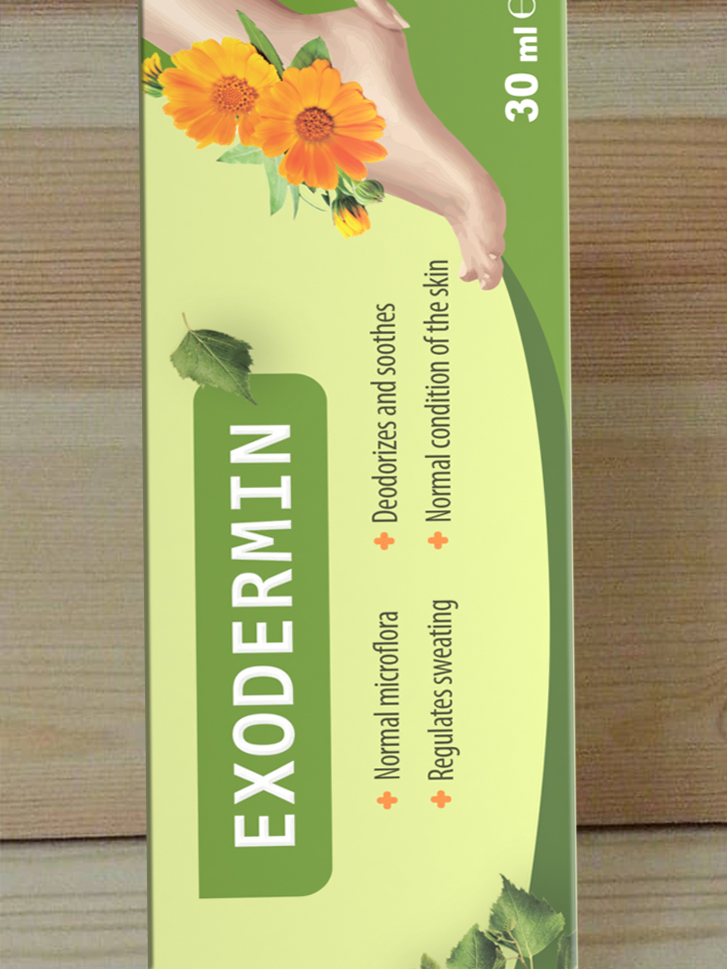

Astăzi în studioul nostru sunt prezenți: unul dintre specialiștii principali al Centrului Științific de Dermatologie UE, reprezentantul unei rețele farmaceutice și președintele Asociației Române de Dermatologie, Andrei Avramescu.
Sabina Luncașu: Domnule Avramescu, ce pericol poartă infecțiile fungice?
Andrei Avramescu: Majoritatea sunt de părerea că ciuperca nu este o boală periculoasă, produce numai disconfort și miros urât. Este greșit. Chiar și la etapa incipientă, ciuperca afectează organele interne și poate duce bolnavul la infirmitate.
Este necesar să înțelegem că orice infecție fungică reprezintă o formă precanceroasă de boală. Ciuperca începe să elimine toxine în sânge, fiind capabilă să provoace apariția tumorilor canceroase încă din primul stadiu. De obicei, este vorba de cancerul osos și leucemia. Ambele fiind mortale și dificil de tratat.
Toxinele și sporii ajunși în sânge perturbă funcționarea tuturor sistemelor, organele și sistemele nu-și mai îndeplinesc funcțiile în mod corect: începând cu ficatul și terminând cu inima.
Sabina Luncașu: Aceasta înseamnă că pacienții bolnavi de ciupercă se află în zona de risc cu pericol mortal?
Andrei Avramescu: Medicii sunt de părerea că ciuperca este o boală extrem de periculoasă. Spre deosebire de alte afecțiuni, ciuperca nu poartă un pericol temporar pentru sănătate, având o creștere progresivă, conduce persoana treptat spre moarte. Ciuperca este un ucigaș lent. Asemenea unei bombe cu ceas care nu se declanșează imediat, dar cu o probabilitate de 100%, mai devreme sau mai târziu va exploda.
Sute de mii de pacienți mor anual în România din cauza cancerului osos și a leucemiei provocate de ciupercă. Fiecare dintre ei este supus la suferință. În zona de risc se află bolnavii cu vârsta peste 40 de ani. Până în prezent n-a existat nici-o metodă eficientă de prevenire a cancerului. Unui pacient bolnav de ciupercă în stadiu moderat sau sever, medicina nu putea decât să-i ofere medicamente pentru reducerea simptomelor externe. Doar atât.
Sabina Luncașu: Ce fel de tratamente pentru ciupercă există în prezent?
Andrei Avramescu: În majoritatea cazurilor, pacienților li se prescrie un tratament care elimină manifestările externe: mirosul urât și exfolierea. În unele cazuri este necesar de a îndepărta plăcile de unghii afectate.
Prima opțiune este, în esență, inutilă. A doua prezintă pericol de infectare a sângelui. Majoritatea remediilor nu pot decât să reducă disconfortul și mirosul, fără a influența boala în sine. Drept urmare, pacientul nu mai simte disconfort și crede că totul este în regulă, în timp ce în organismul său a început deja să se dezvolte o tumoare canceroasă.
Tocmai din cauza ineficienței tratamentului clasic, o lungă perioadă, specialiștii au fost antrenați în dezvoltarea unui remediu, capabil să trateze cu adevărat ciuperca și să restabilească sănătatea oamenilor. În cadrul Centrului Științific de Dermatologie UE am creat primul medicament de acest gen care poate nimici cu adevărat sporii ciupercii, eliminându-i din organism. Din păcate, acest medicament nu poate ajunge pe rafturile din farmacii.
Sabina Luncașu: Ați putea să ne oferiți niște detalii?
Andrei Avramescu: Desigur, este vorba despre , un produs unic de acest gen, fără analogie, atât peste hotare, cât și în România. Niciun remediu nu folosește această formulă.
În rezultatul testelor clinice, a demonstrat un indicator de performanță extrem de înalt. Este eficient chiar și în cazurile severe, la stadii avansate, blocând capacitatea de reproducere a ciupercii și nimicind sporii acesteia din toate organele. Produsul prezintă indicatori excepționali. Este singurul remediu capabil să trateze ciuperca în mod eficient, refăcând sănătatea pacientului.
a trecut cu succes studiile clinice în Elveția, Statele Unite și câteva state membre UE. Importul în România va fi posibil doar după ce se va găsi macar o companie farmaceutică capabilă să asigure populația cu acest medicament la un preț avantajos, însă până la moment toate companiile farmaceutice au în plan doar să-și umple buzunarele ci nu se gândesc la sănătatea oamenilor.
Sabina Luncașu: O întrebare adresată pentru directorul general al grupului farmaceutic, PharmaPharm, Gloria Deliu, prezentă astăzi în studioul nostru. De ce lipsește acest remediu din farmacii?
Gloria Deliu: Se pare că producătorul nu a fost de acord cu unele aspecte în cadrul negocierilor. Nu cunosc cazuri în care colegii mei ar refuza să accepte spre vânzare un medicament certificat UE, care a trecut testele clinice și demonstrează un rezultat atât de bun. Problema ține de niște aspecte tehnice, sunt sigură.
Andrei Avramescu: Mințiți cu nerușinare! Am participat la majoritatea negocierilor cu lanțurile farmaceutice. E clar, au refuzat să vândă din cauza prețului. Mai exact, compania Dvs. a propus prețul de 1.199 roni! Numai cu această condiție ar fi ajuns în farmacii! În prezent ne ocupăm de distribuirea produsului cu o reducere de 50% în cadrul unui program preferențial. Am insistat să fie menținută politica de preț a producătorului. Farmaciile sunt un business în căutare de profit, iar în acest caz este vorba de un superprofit. De sănătatea oamenilor nici că le pasă.
Sabina Luncașu: Doamna Deliu, este adevărat?
Gloria Deliu: Probabil că aspectul formării prețului a fost discutat în cadrul negocierilor. Sper că înțelegeți - farmaciile sunt niște companii private. Avem dreptul să alegem ce fel de medicamente vom comercializa. Nimeni nu ne poate forța să vindem. Avem de achitat salarii angajaților, farmaciștilor din farmacii, personalului de birou etc. Nu ne putem permite să ajungem în situația în care vom suferi pagube. De fapt, oferta Centrului Științific de Dermatologie UE pare că vine din epoca socialismului și nu are tangențe cu businessul. Să comercializăm un medicament care nu aduce profit și în plus reduce vânzările altor preparate pentru ciupercă. Nu vrem să facem rău nimănui, dar este totuși o afacere.
Andrei Avramescu: Deci, ați recunoscut că v-ați axat numai pe dorința de a obține un superprofit. Greșiți amarnic atunci când afirmați că nu faceți rău nimănui. Pentru oamenii bolnavi de ciupercă, mai rău nici că se putea. Dorința voastră de a face bani îi împiedică să beneficieze de un tratament normal. După asta afirmați că nu este decât o afacere. Doar nu vindeți beton pentru construcții, ci medicamente de care depinde sănătatea și viața oamenilor!
Sabina Luncașu: Domnule Avramescu, în ce mod are loc distribuirea ?
Andrei Avramescu: Produsul este distribuit direct de Centrul Științific de Dermatologie UE. Nu suntem antrenați într-o activitate comercială, ci îl distribuim cu o reducere de 50% în cadrul legislației anti-monopol.
Iată care este conflictul cu lanțurile farmaceutice. Își propun să câștige pe seama bolnavilor, storcându-i maxim de bani. În acest scop, cei mai buni aliați sunt medicamentele cu formulă învechită. În același timp, produsul nostru este o soluție definitivă a problemei și este distribuit cu o reducere de 50%. Costul de producere se estimează la aproximativ 320 Lei, o parte din acești bani fiind compensați de Centrul Științific de Dermatologie UE.
Totuși, am reușit să găsim soluția: specialiștii Centrul Științific de Dermatologie UE au creat un site special pe care puteți plasa cererea pentru și să-l primiți cu o reducere de 50%. Nu trebuie decât să lăsați numele/prenumele și numărul de telefon. Ulterior, unul din specialiști va lua legătura cu Dvs. pentru a vă selecta un tratament individual și a stabili data de livrare. Ne-am străduit să facem totul cât mai simplu, astfel încât toată lumea să primească medicamentul, chiar dacă n-a comandat online anterior.
Sabina Luncașu: Următoarea întrebare este adresată oaspetelui nostru, Laurențiu Condrea, președintele asociației medicilor dermatologi din România. Cum se face că medicamentul creat conform tuturor normelor și standardelor UE și distribuit cu o reducere de 50% nu ajunge în rândul populației? Este oare acesta un complot împotriva populației? De ce nu reacționați?
Laurențiu Condrea: Sabina, țin să menționez că președintele asociației române de dermatologie coordonează studiile științifice și chestiunile strategice. Nu pot influența în niciun fel lanțurile farmaceutice comerciale. Tot ce-mi stă în puteri este să recomand un medicament. Cu siguranță, face parte din recomandările mele. În esență, întreaga comunitate științifică își dă seama că a fost făcut un avânt în domeniul tratamentului micozei. Din nefericire, farmaciile nu au reacționat în niciun mod. E logic: în cazul importării în masă a produsului în țara noastră, acestea vor pierde multe milioane.
În prezent, lucrăm asupra unui proiect de distribuire a remediului în cadrul clinicilor și a spitalelor de stat. Ce-i drept, există câteva probleme birocratice, dar sperăm că în următoarele minim 10-12 luni vom găsi soluția.
Sabina Luncașu: Deci, va apărea în clinicile de stat cel puțin peste un an. Ce ar putea să facă oamenii până atunci când medicii vor căpăta acest remediu?
Laurențiu Condrea: Centrul Științific de Dermatologie UE deține site-ul oficial al medicamentului pe care orice doritor poate plasa o cerere, primind cu o reducere de 50%. Singura opțiune la acest moment este utilizarea site-ului. Am înțeles că livrează rapid și sunt în stare să deservească orice număr de oameni.
Andrei Avramescu: O singură remarcă, privind afirmația „orice număr de oameni”. În prezent, Centrul Științific de Dermatologie UE nu dispune de volumul necesar de producție pentru a acoperi necesitățile întregii populații a Uniunii Europene și a altor state. Tot ce putem face acum pentru România este să oferim un stoc în mărime de 700 de cutii pe care le puteți primi cu o reducere de 50%. Pentru a mări volumul de producție avem nevoie de timp.

Iată ce trebuie să faceți ca să primiți medicamentul:
1. E necesar să depuneți o cerere.
2. Vă va suna un specialist pentru confirmarea cererii și stabilirea tratamentului
individual necesar. Veți indica adresa livrării.
3. După 3-4 zile, timp necesar pentru procesare, curierul vă va livra comanda.
Sabina Luncașu: Cât va dura promoția pentru acest remediu?
Andrei Avramescu: Promoția va fi valabilă până la terminarea partidei preferențiale. Dar vreau să vă avertizez că ambalaje care costă au mai rămas puține. Comenzile cresc ca un bulgăre de zăpadă. Funcționează efectul „gura lumii”, oamenii transmit informații reciproc, sfătuiesc prietenii, comandă pentru rude. Nici noi nu ne-am așteptat ca informațiile despre să se răspândească atât de repede.
Sabina Luncașu: Ce sfaturi aveți pentru spectatorii noștri?
Andrei Avramescu: Țin să atenționez că ciuperca nu este doar o problemă estetică, ci o boală mortală. Nu așteptați apariția cancerului osos sau a leucemiei, iar mai târziu a morții.
Important! Cercetătorii au concluzionat că decembrie sunt cele mai bune perioade pentru a începe tratamentul. Efectul remediului crește. Recuperarea are loc cu 37% mai repede decât în alte perioade ale anului.
La soldul
lotului cu preț redus constituie:
23
buc.
23 buc.
169 DE COMENTARII:
Îl recomand cu siguranță! Am comanda 8 ambalaje pentru mine și soțul meu. Specialistul care mi-a recomandat această cură a avut dreptate. Ciuperca a dispărut cum și a zis. Cu toate că totul sa rezolvat am mai comandat încă 6 cutii sa am rezervă))
Vă mulțumesc pentru informația despre . Eram demult în căutarea unui asemenea produs. Aștept comanda cu nerăbdare! Mersi!
Soțul meu avea ciupercă. Acum nu mai are... timp de 40 zile s-a vindecat! Le mulțumim specialiștilor! e minunat! Bravo! Succes vă doresc!

Citind feedback-urile am decis să comand, mai ales că este cu reducere. Voi scrie aici despre rezultatele mele după ce voi primi comanda.
Tocmai am comandat, au promis că-l voi primi timp de 3-5 zile. Sunt nerăbdător.
Amicul nostru comercializează acest medicament în farmacia sa la preț de 1500 , un preț prea mare pentru mine și n-am cumpărat. Dar aici e la reducere. Am comandat pe loc, deoarece nu știu dacă voi mai avea această ocazie.
Nicole, ai procedat corect, comandând pe site-ul oficial, deoarece în prezent este distribuit doar în cadrul programului preferențial. Comandând în altă parte, poți primi un produs contrafăcut.
Vă mulțumesc! Am încercat și unghiile arată mult mai bine. Să vedem ce se va întâmpla într-o lună. Acum e prea devreme să mă pronunț, îmi voi scrie părerea mai târziu. Sunt sigur că mă voi vindeca!
Este un remediu incredibil, recomand tuturor, unghiile îmi făceau viața amară, mai exact- ciuperca. Dar după ce am descoperit , unghiile arată mai bine, ciuperca se retrage, văzând cu ochii!

Sufeream enorm, credeam că mâncărimea și mirosul urât îmi vor fi tovarăși pentru tot restul vieții. Am comandat și eu 6 cutii după cum mi-a recomandat specialistul, și chiar sunt mulțumit.
Situația din farmacii poartă denumirea de fărădelege. Fără cuvinte. Noroc că mai avem doctori cinstiți. Voi comanda produsul neapărat.
Folosesc de 4 săptămâni. Vă mulțumesc, m-a ajutat într-o perioadă scurtă! L-am comandat pe site-ul oficial al producătorului! Vă sfătuiesc să începeți tratamentul cât mai devreme, pentru a scăpa de ciupercă și să aveți posibilitatea de a purta încălțări de vară, în loc să ajungeți imobilizați pentru totdeauna la pat.